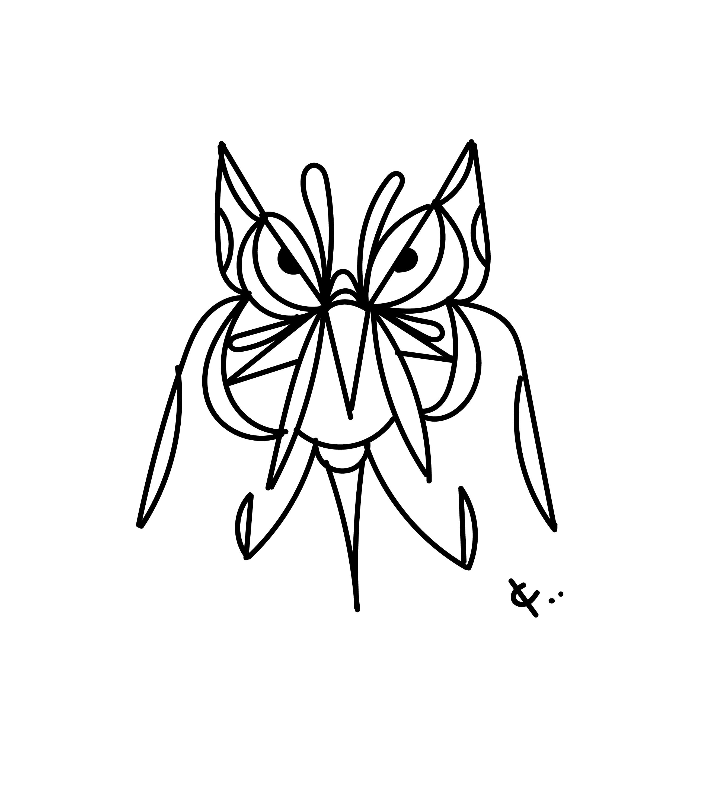

Challenges
This lab tasked us to experiment with creating and changing elements on our html page using javascript. We created a javascript file with variables assigned to elements for our html site and we then went to town adding them in and styling them on the page.
Problems
No problems occured during our work and we attribute this to the lecture and that wes' github page for this class had his javascript file that we could use as a reference.
Results
On my page, anything green has either been placed into my doc by using javascript or I used javascript to style it and change its appearance.
